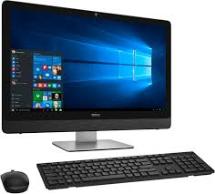

DEFINITION
computer
Sponsored News
Better Together: Hadoop and Your Enterprise Data Warehouse
–SAS Institute Inc.
Five Steps to Maximizing the Value of Hadoop
–SAS Institute Inc.
See More
Vendor Resources
Memory corruption attacks
– ComputerWeekly.com
A computer is a device that accepts information (in the form of digitalized data) and manipulates it for some result based
on a program or sequence
of instructions on how the data is to be processed. Complex computers also include the means for storing data (including the program, which is also a form of data) for some necessary duration
. A program may be invariable and built into the computer (and called logic circuitry as it is on microprocessors) or different programs may be provided to the computer (loaded into its storage and then started by an administrator or user). Today's computers have both kinds of programming.

Building a computer into the watch form factor has been attempted many times but the release of the Apple Watch leads to a new level of excitement
. Incorporating a version of Apple's iOS operating system, as well as sensors for environmental and health monitoring, the Apple Watch was designed to be incorporated into the Apple environment with compatibility with iPhones and Mac Books. Almost a million units were ordered on the day of release. The Watch was received with great enthusiasm, but critics took issue with the somewhat limited battery life and high price